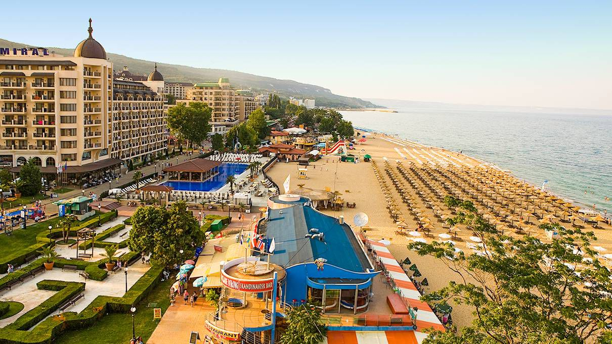
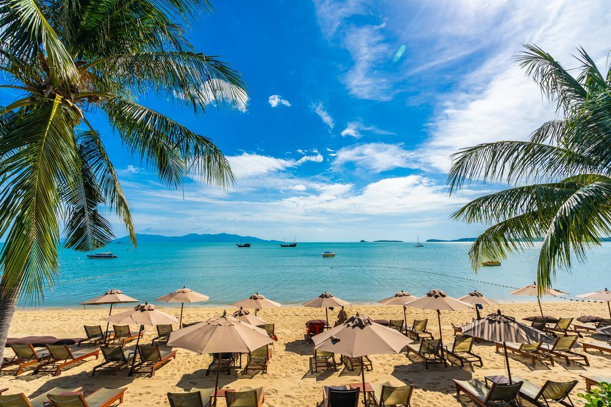
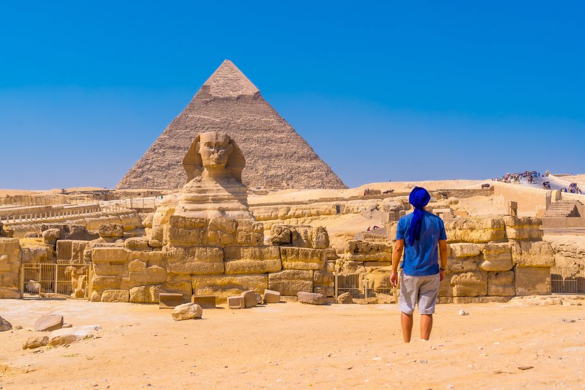
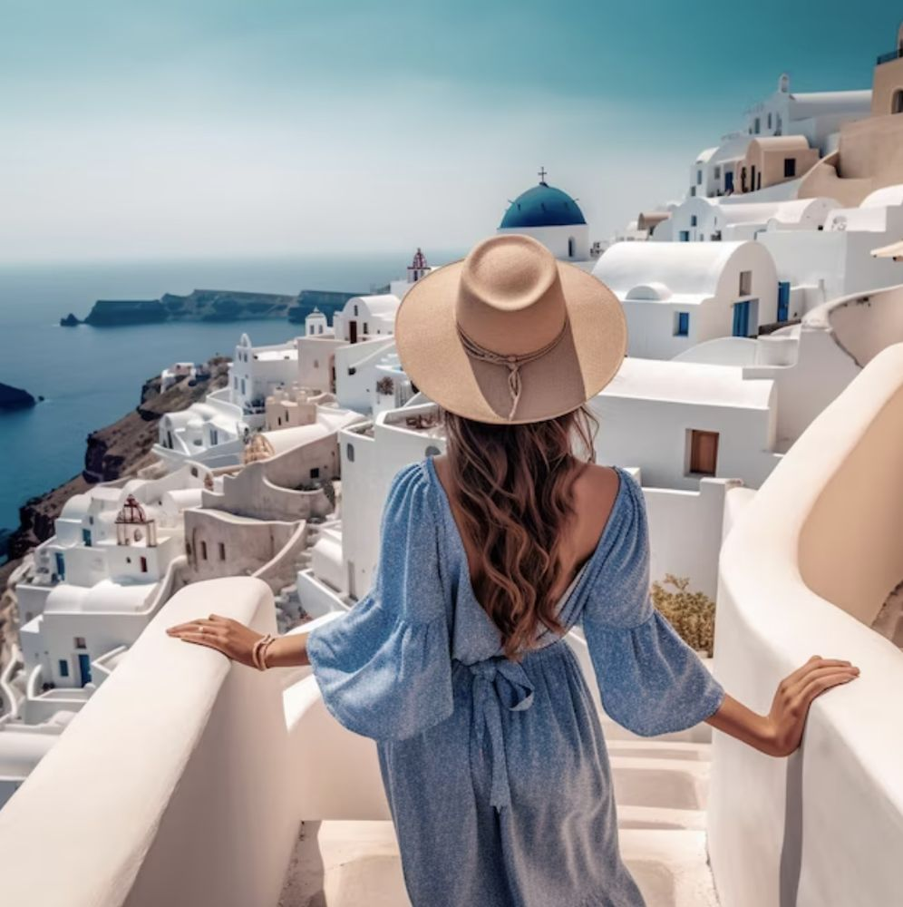
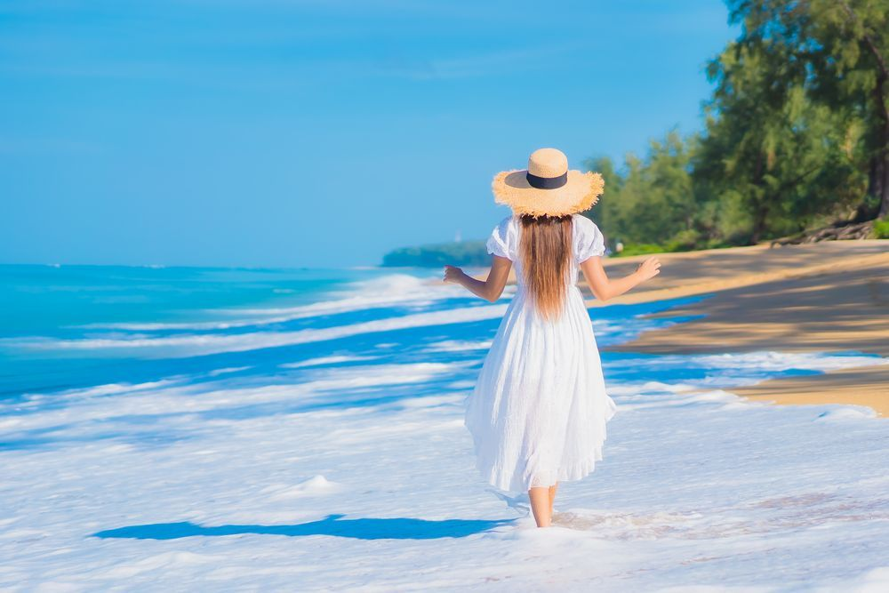
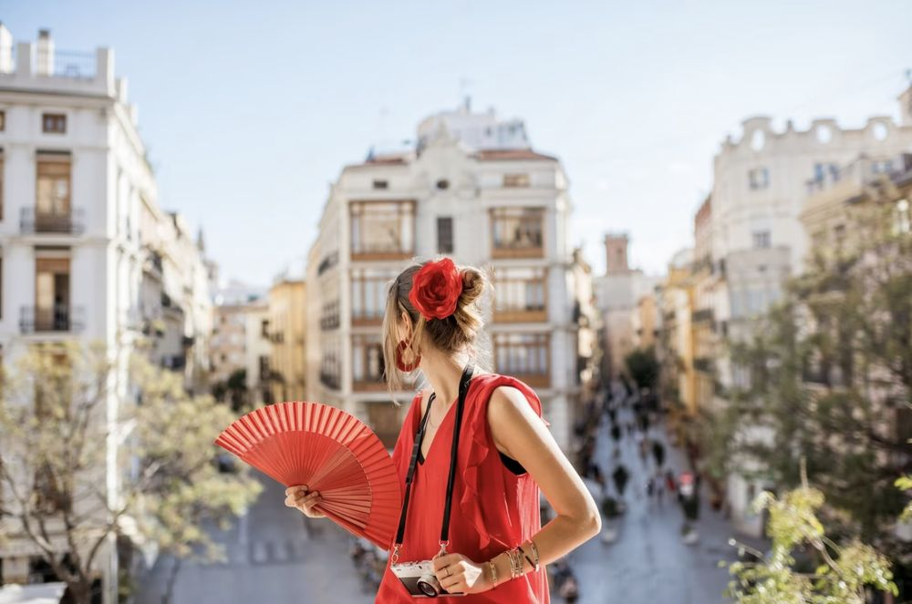
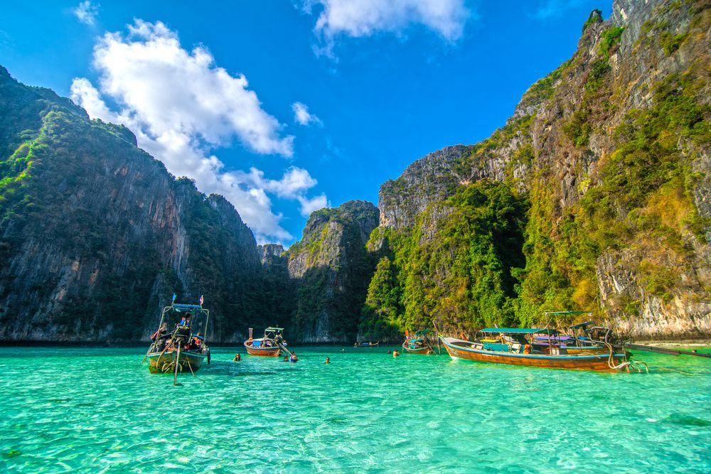
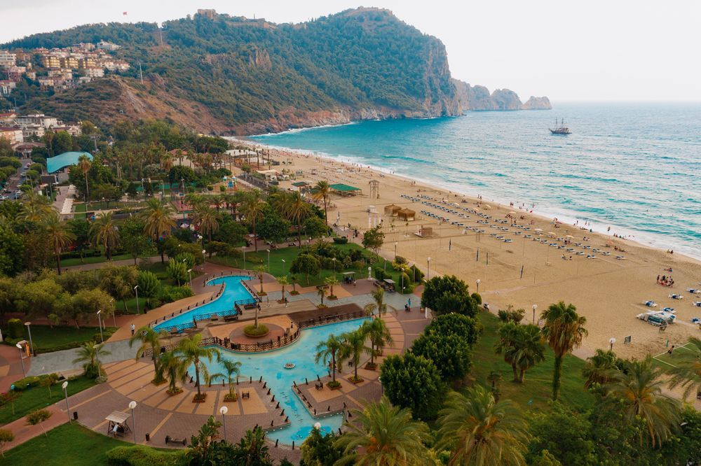
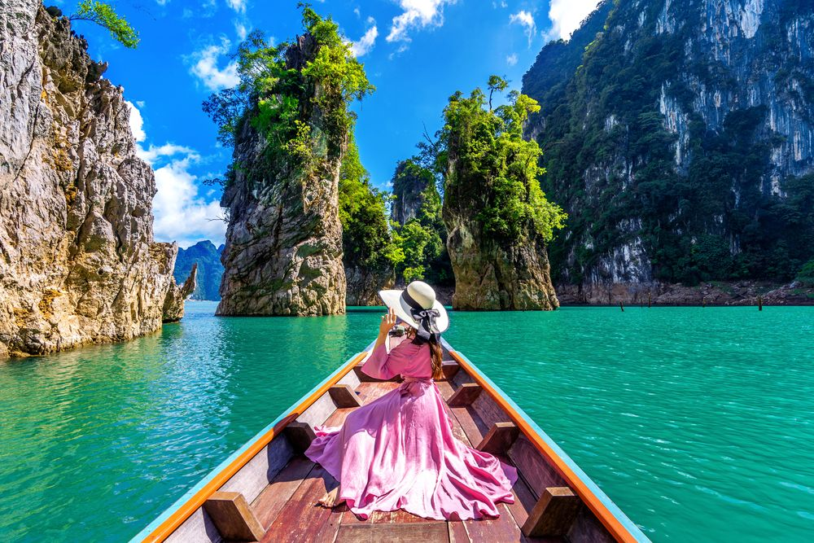

Болгария - с 11-го по 17-е октября
Болгария – балканское государство с разнообразным рельефом. На его территории находится побережье Черного моря, равнины, горы и реки, одна из которых – Дунай. В Болгарии ощущается влияние греческой, славянской, османской и персидской культур. Страна обладает богатейшим наследием. Здесь сохранилась традиционная музыка и множество танцев, костюмов и ремесел. В V веке до нашей эры у подножия куполообразного горного массива Витоша была основана столица государства – София.
Болгария – балканское государство с разнообразным рельефом. На его территории находится побережье Черного моря, равнины, горы и реки, одна из которых – Дунай. В Болгарии ощущается влияние греческой, славянской, османской и персидской культур. Страна обладает богатейшим наследием. Здесь сохранилась традиционная музыка и множество танцев, костюмов и ремесел. В V веке до нашей эры у подножия куполообразного горного массива Витоша была основана столица государства – София.

Доминика́нская Респу́блика - с 18-го по 25-е октября
Доминика́нская Респу́блика (исп. República Dominicana [reˈpuβlika ðominiˈkana]), в просторечии — Доминика́на — государство в восточной части острова Гаити (Карибское море) и на прибрежных островах. Западную часть острова (36 % территории) занимает государство Республика Гаити. Бо́льшую часть своей истории (до независимости) колония была известна как Санто-Доминго в честь её святого заступника Доминика. Жителей назвали «Dominicanos» («доминиканцы») — прилагательное от «Доминго», и революционеры назвали свою независимую страну «Ла Република Доминикана (La República Dominicana)».
Доминика́нская Респу́блика (исп. República Dominicana [reˈpuβlika ðominiˈkana]), в просторечии — Доминика́на — государство в восточной части острова Гаити (Карибское море) и на прибрежных островах. Западную часть острова (36 % территории) занимает государство Республика Гаити. Бо́льшую часть своей истории (до независимости) колония была известна как Санто-Доминго в честь её святого заступника Доминика. Жителей назвали «Dominicanos» («доминиканцы») — прилагательное от «Доминго», и революционеры назвали свою независимую страну «Ла Република Доминикана (La República Dominicana)».

Египет - с 26-го октября по 1-е ноября
Египет – страна в Северо-Восточной Африке и на Ближнем Востоке. О ее богатой истории, насчитывающей более пяти тысяч лет, напоминают археологические памятники в плодородной долине реки Нил, среди которых пирамиды Гизы, Большой сфинкс, а также Карнакский храм, стены которого испещрены иероглифами, и Долина царей с гробницами фараонов в районе Луксора. Столица страны Каир славится мечетью Мухаммеда Али, построенной во времена Османской империи, и Египетским музеем, где выставлены мумии фараонов и позолоченные деревянные статуи Тутанхамона.
Египет – страна в Северо-Восточной Африке и на Ближнем Востоке. О ее богатой истории, насчитывающей более пяти тысяч лет, напоминают археологические памятники в плодородной долине реки Нил, среди которых пирамиды Гизы, Большой сфинкс, а также Карнакский храм, стены которого испещрены иероглифами, и Долина царей с гробницами фараонов в районе Луксора. Столица страны Каир славится мечетью Мухаммеда Али, построенной во времена Османской империи, и Египетским музеем, где выставлены мумии фараонов и позолоченные деревянные статуи Тутанхамона.

Греция - с 2-го по 8-е ноября
Греция – страна в Южной Европе, расположенная на Балканском полуострове и тысячах островов в Эгейском и Ионическом морях. Она является наследницей могущественной Древней Греции, которая считается колыбелью западной цивилизации. Столица Греции Афины славится своей крепостью Акрополь, возведенной в V веке до н. э., и храмом Парфенон. У туристов пользуются популярностью пляжи острова Санторини с черным песком, курорты острова Миконос и другие места летнего отдыха.
Греция – страна в Южной Европе, расположенная на Балканском полуострове и тысячах островов в Эгейском и Ионическом морях. Она является наследницей могущественной Древней Греции, которая считается колыбелью западной цивилизации. Столица Греции Афины славится своей крепостью Акрополь, возведенной в V веке до н. э., и храмом Парфенон. У туристов пользуются популярностью пляжи острова Санторини с черным песком, курорты острова Миконос и другие места летнего отдыха.

Мальдивы - с 9-го по 15-е ноября
Мальдивы – тропическое государство в Индийском океане, расположенное на 26 кольцевидных атоллах, которые состоят из более чем тысячи коралловых островов. Оно славится своими пляжами, голубыми лагунами и огромными рифами. В столице страны Мале стоит посетить оживленный рыбный рынок, рестораны и магазины на главной дороге Меджеде-Магу, а также мечеть Хукуру-Миский (Пятничная мечеть), фундамент и стены которой украшены резьбой по белому кораллу.
Мальдивы – тропическое государство в Индийском океане, расположенное на 26 кольцевидных атоллах, которые состоят из более чем тысячи коралловых островов. Оно славится своими пляжами, голубыми лагунами и огромными рифами. В столице страны Мале стоит посетить оживленный рыбный рынок, рестораны и магазины на главной дороге Меджеде-Магу, а также мечеть Хукуру-Миский (Пятничная мечеть), фундамент и стены которой украшены резьбой по белому кораллу.

Испания - с 16-го по 21-е ноября
Испания – европейская страна, расположенная на Пиренейском полуострове. Территория Испании разделена на 17 автономных регионов. В столице страны, Мадриде, находятся Королевский дворец и музей Прадо, где хранятся произведения европейских мастеров. В Сеговии можно посетить средневековый замок (Алькасар) и увидеть хорошо сохранившийся римский акведук. Барселона – столица автономного сообщества Каталония. Облик этого города определяют многочисленные причудливо-фантастические творения архитектора Антонио Гауди, среди которых храм Святого Семейства.
Испания – европейская страна, расположенная на Пиренейском полуострове. Территория Испании разделена на 17 автономных регионов. В столице страны, Мадриде, находятся Королевский дворец и музей Прадо, где хранятся произведения европейских мастеров. В Сеговии можно посетить средневековый замок (Алькасар) и увидеть хорошо сохранившийся римский акведук. Барселона – столица автономного сообщества Каталония. Облик этого города определяют многочисленные причудливо-фантастические творения архитектора Антонио Гауди, среди которых храм Святого Семейства.

Таиланд - с 22-го по 25-е ноября
Таиланд – государство в Юго-Восточной Азии с многочисленными тропическими пляжами, роскошными королевскими дворцами, древними руинами и богато украшенными буддийскими храмами. В Бангкоке, столице страны, по соседству с ультрасовременными небоскребами вдоль каналов расположились тихие жилые районы и культовые храмы: ват Арун, ват Пхо и храм Изумрудного Будды (ват Пхракэу). Недалеко от города находятся пляжные курорты, в том числе многолюдная Паттайя и фешенебельный Хуахин.
Таиланд – государство в Юго-Восточной Азии с многочисленными тропическими пляжами, роскошными королевскими дворцами, древними руинами и богато украшенными буддийскими храмами. В Бангкоке, столице страны, по соседству с ультрасовременными небоскребами вдоль каналов расположились тихие жилые районы и культовые храмы: ват Арун, ват Пхо и храм Изумрудного Будды (ват Пхракэу). Недалеко от города находятся пляжные курорты, в том числе многолюдная Паттайя и фешенебельный Хуахин.

Турция - с 26-го по 30-е ноября
Турция – государство на юго-востоке Европы и юго-западе Азии, культура которого сочетает древнегреческие, персидские, римские, византийские и османские традиции. В многонациональном Стамбуле, раскинувшемся на берегах пролива Босфор, туристов привлекают знаменитый собор Святой Софии с его устремленным ввысь куполом и христианскими мозаиками, величественная Голубая мечеть XVII века и построенный в 1460-е годы дворец Топкапы – бывшая резиденция османских султанов. Столицей Турции является современный город Анкара.
Турция – государство на юго-востоке Европы и юго-западе Азии, культура которого сочетает древнегреческие, персидские, римские, византийские и османские традиции. В многонациональном Стамбуле, раскинувшемся на берегах пролива Босфор, туристов привлекают знаменитый собор Святой Софии с его устремленным ввысь куполом и христианскими мозаиками, величественная Голубая мечеть XVII века и построенный в 1460-е годы дворец Топкапы – бывшая резиденция османских султанов. Столицей Турции является современный город Анкара.

Вьетнам - с 1-го по 7-е декабря
Вьетнам – это страна в Юго-Восточной Азии, расположенная на побережье Южно-Китайского моря. Она известна своими пляжами, реками, буддистскими пагодами и оживленными городами. В столице, городе Ханой, находится огромный мраморный мавзолей знаменитого лидера коммунистической партии страны Хо Ши Мина. В городе Хошимин, который раньше назывался Сайгон, можно найти множество зданий во французском колониальном стиле, а также музеев, посвященных истории Вьетнамской войны. Туннели Кути часто использовались солдатами Вьетконга.
Вьетнам – это страна в Юго-Восточной Азии, расположенная на побережье Южно-Китайского моря. Она известна своими пляжами, реками, буддистскими пагодами и оживленными городами. В столице, городе Ханой, находится огромный мраморный мавзолей знаменитого лидера коммунистической партии страны Хо Ши Мина. В городе Хошимин, который раньше назывался Сайгон, можно найти множество зданий во французском колониальном стиле, а также музеев, посвященных истории Вьетнамской войны. Туннели Кути часто использовались солдатами Вьетконга.